Ogawara
Ogawara · Miyagi
Ogawara
Highlighted on the Miyagi map.
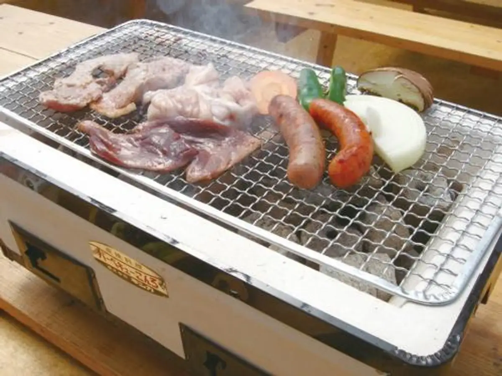
Stay
グリーンホテル大河原
Guriinhoteru Oogawara
Dining
西安刀削麺 大河原店
Seian Tousaku Men Oogawara Mise
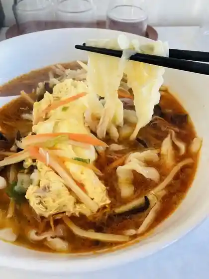
山田庵
Yamada Iori
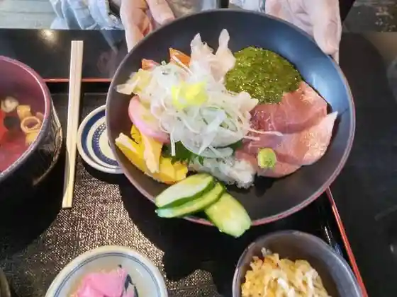
とり八
Tori Hachi
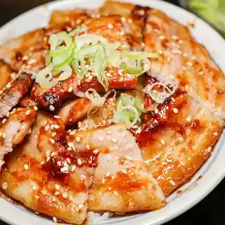
四季彩
Shiki Sai
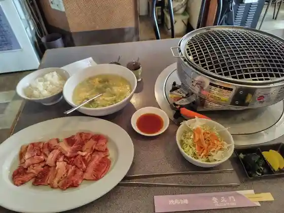
登正門
Tou Seimon
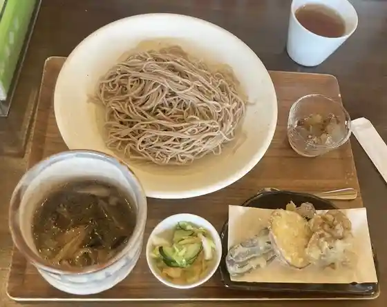
日本蕎麦街道 一匠庵
Nippon Soba Kaidou Ichi Takumi Iori
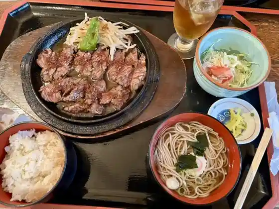
さくら家
Sakura Ie
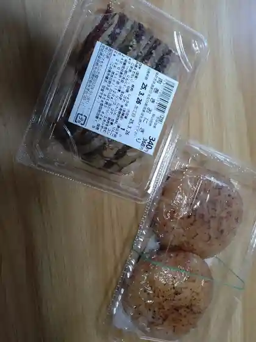
とんとんの丘もちぶた館
Tontonno Oka Mochibuta Kan
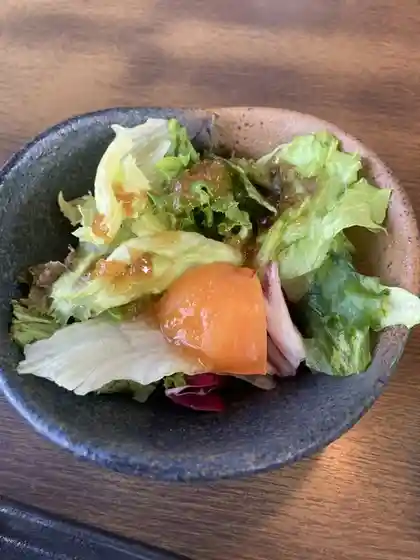
ブルスタ オラムー 大河原店
Burusuta Oramuu Oogawara Mise
わらく
Waraku
拉麺 翠鶏
Raamen Sui Niwatori
とんとんの丘 もちぶた館 広表店
Tontonno Oka Mochibuta Kan Kou Omotedana
石川菓子店
Ishikawa Kashi Mise
ブーランジェリージラフ フルールドゥスリジエ
Buuranjieriijirafu Furuurudousurijie
喜多屋
Kita Ya
ケララキッチン
Kerarakitchin
和の台所 なだまん
Nagono Daidokoro Nadaman
芳来軒
Hou Rai Ken
大ちゃん
Dai Chan
ペニーレイン
Peniirein
大河原バル E-to
E-to
居酒屋あい八
Izakaya Ai Hachi
珈琲カンテラ
Koohii Kantera
おばんざいダイニング ココ
Obanzai Dainingu Koko
玉山食堂
Tamayama Shokudo
玄来
Gen Rai
にぎりめし
Nigirimeshi
焼肉・冷麺らんぷ
焼肉・冷麺らんぷ
グリーンホテル大河原
Guriinhoteru Oogawara
モンテ・マーレ
モンテ・マーレ
元祖 晒よし飴本舗 市場家
Ganso Sarashi Yoshi Ame Honpo Shijou Ie
拉麺ろはん
Raamen Rohan
ブロス
Burosu
ツィンベル
Tsuinberu
サンパチラーメン
Sanpachiraamen
和風れすとらん おぎの
Wafuu Resutoran Ogino
中国料理 季白亭
Chuugokuryouri Ki Shiro Tei
焼きたてクレープ Chill Bon
Chill Bon
満天食堂 大河原店
Manten Shokudo Oogawara Mise
ムッシュマスノ・アルパジョン 大河原店
ムッシュマスノ・アルパジョン 大河原店
ダイニング わこう
Dainingu Wakou
エレファンタ
Erefanta
フライング バード 大河原店
Furaingu Baado Oogawara Mise
白河屋
Shirakawa Ya
HELF
HELF
菓匠三全 工場直売店ファクトリーショップ
Kashousanzen Koujou Chokubai Mise Fakutoriishoppu
ラーメン 大志軒 大河原店
Raamen Taishi Ken Oogawara Mise
あじわい亭 大河原店
Ajiwai Tei Oogawara Mise
早坂精肉店
Hayasaka Seinikuten
ホルモン焼肉 ぷるぷる
Horumon Yakiniku Purupuru
ごっつぉうさん
Gottsuousan
おおがわら天然温泉いい湯
Oogawara Tennen Onsen Ii Yu
天ノ章
Ten No Shou
たこ焼き 福家
Tako Yaki Fukuya
丸亀製麺 大河原店
Marugame Seimen Oogawara Mise
大むら
Oomu Ra
居酒屋くじら
Izakaya Kujira
大ひょう
Dai Hyou
阿部蒲鉾店 大河原店
Abe Kamaboko Mise Oogawara Mise
フルーツファクトリー 390
Furuutsufakutorii 390
蔵八ラーメン亭 大河原バイパス店
Kura Hachi Raamen Tei Oogawara Baipasu Mise
ガスト 仙南大河原店
Gasuto Sennan Oogawara Mise
かっぱ寿司 大河原店
Kappa Sushi Oogawara Mise
ミスタードーナツ 大河原バイパスショップ
Misutaadoonatsu Oogawara Baipasushoppu
焼肉冷麺やまなか家 大河原店
Yakiniku Reimen Yamanaka Ie Oogawara Mise
ペンギンベーカリー 大河原店
Penginbeekarii Oogawara Mise
あじわいの朝 大河原店
Ajiwaino Asa Oogawara Mise
すしたけ
Sushitake
惠カフェ
Megumi Kafe
ファーストフード TUKAMOTO
TUKAMOTO
500円食堂
500 En Shokudo
吉野家 4号線大河原店
Yoshinoya 4 Gousen Oogawara Mise
CoCo壱番屋 宮城大河原店
Coco Ichiban Ya Miyagi Oogawara Mise
マクドナルド 大河原店
Makudonarudo Oogawara Mise
シャトレーゼ 大河原店
Shatoreeze Oogawara Mise
和風レストランまるまつ 大河原店
Wafuu Resutoran Marumatsu Oogawara Mise
菓匠三全 大河原バイパス店
Kashousanzen Oogawara Baipasu Mise
グリーンズカフェ
Guriinzukafe
蔵王の昔飴本舗
Zaou No Mukashi Ame Honpo
ユナイテッド・シネマ フォルテ宮城大河原
ユナイテッド・シネマ フォルテ宮城大河原
ホルモン屋たまりば
Horumon Ya Tamariba
居酒屋ささき
Izakaya Sasaki
喫茶室 桜
Kissashitsu Sakura
平禄寿司 大河原店
Taira Roku Sushi Oogawara Mise
牛角 宮城大河原店
Gyuukaku Miyagi Oogawara Mise
お茶の井ヶ田 喜久水庵 フォルテ大河原店
O Cha No I Ke Ta Yoshihisa Mizu Iori Forute Oogawara Mise
ファーストフード TUKAMOTO
TUKAMOTO
さくらフローラ
Sakura Furoora
ヤマキチ鮮魚
Yamakichi Sengyo
セブンイレブン 大河原高砂町店
Sebun'irebun Oogawara Takasagochou Mise
ゆたか寿し
Yutaka Hisashi Shi
ケンタッキー フライドチキン 大河原店
Kentakkii Furaidochikin Oogawara Mise
福島丼丸 大河原店
Fukushima Donburi Maru Oogawara Mise
やきとり大吉 大河原店
Yakitori Daikichi Oogawara Mise
つつみ屋 大河原店
Tsutsumi Ya Oogawara Mise
ほっともっと 大河原新桜町店
Hottomotto Oogawara Shin Sakuramachi Mise
焼きたて屋 ケーヨーデイツー大河原店
Yaki Tate Ya Keeyoodeitsuu Oogawara Mise
丼屋 ごんちゃん 大河原店
Donburi Ya Gonchan Oogawara Mise
セブンイレブン 大河原駅前店
Sebun'irebun Oogawara Ekimae Mise
味工房容仙
Aji Koubou You Sen
モンペリエ 大河原店
Monperie Oogawara Mise
ラルカンシェール みやぎ生協大河原店
Rarukanshieeru Miyagi Seikyou Oogawara Mise
茶居珈
Cha Kyo Ka
花寿司
Hanazushi
大河原商業高等学校 学生食堂
Oogawara Shougyou Koutougakkou Gakusei Shokudo
和洋亭 ぶざん
Wayou Tei Buzan
来栖珈琲店
Kurusu Koohii Mise
LAWSON 大河原末広店
LAWSON
CLOCHE BAKERY
CLOCHE BAKERY
ファミリーマート 柴田農林高前店
Famiriimaato Shibata Nourin Taka Mae Mise
三越大河原店
Mitsukoshi Oogawara Mise
我妻製菓
Wagatsuma Seika
みやぎ県南中核病院外来食堂
Miyagi Kennan Chuukaku Byouin Gairai Shokudo
ファミリーマート 大河原高砂町店
Famiriimaato Oogawara Takasagochou Mise
お繁寿し
O Han Hisashi Shi
喫茶＆酒房やまざき
Kissa & Sake Bou Yamazaki
居酒屋 みさき
Izakaya Misaki
ロートレック
Rootorekku
みやぎ生協 大河原店
Miyagi Seikyou Oogawara Mise
ドミノピザ 大河原新桜町店
Dominopiza Oogawara Shin Sakuramachi Mise
フレスコ キクチ 大河原店
Furesuko Kikuchi Oogawara Mise
菓匠三全 栄町店
Kashousanzen Sakaemachi Mise
デイブレイク
Deibureiku
セブンイレブン みやぎ県南中核病院
Sebun'irebun Miyagi Kennan Chuukaku Byouin
酒どころ 40・60
4060
ギフトプラザ 大河原店
Gifutopuraza Oogawara Mise
ちか酒場 呑み友
Chika Sakaba Nomi Tomo
NewDays 大河原店
NewDays
モビーディック
Mobiidikku
ゑびす屋本舗 大河原店
Ebisu Ya Honpo Oogawara Mise
ヨークベニマル 大河原店
Yookubenimaru Oogawara Mise
呑む処とんとん拍子
Nomu Tokoro Tonton Hyoushi
LUN LUN
LUN LUN
しゃぶしゃぶ亭 壱
Shabushabu Tei Ichi
カワチ薬品 大河原店
Kawachi Yakuhin Oogawara Mise
スナック くろんぼ
Sunakku Kuronbo
自遊時間 大河原店
Jiyuu Jikan Oogawara Mise
古都
Koto
LAWSON 大河原バイパス店
LAWSON
焼鳥豚串豆でっぽう
Yakitori Buta Kushi Mame Deppou
春夏秋冬
Shunkashuutou
馬上かまぼこ店 大河原店
Bajou Kamaboko Mise Oogawara Mise
快活CLUB 大河原店
CLUB
総合会館 LaLaさくら
Sougou Kaikan Lala Sakura
旬菜
Jun Na
セブンイレブン 宮城大河原バイパス店
Sebun'irebun Miyagi Oogawara Baipasu Mise
Welcome to the moon Okawara
Welcome to the moon Okawara
Xian toshomen Ogawara
Xian toshomen Ogawara
Japanese Restaurantogino
Japanese Restaurantogino
Horaiken
Horaiken
Marumatsuokawara
Marumatsuokawara
Okawara Bal E To
Okawara Bal E To
Koitaro
Koitaro
Penny Lane
Penny Lane
Toshomon
Toshomon
Ramen Dotenzan
Ramen Dotenzan
Onihei Ramen
Onihei Ramen
Gusto Sennan Ogawara
Gusto Sennan Ogawara
Menichi Forte
Menichi Forte
Elephanta
Elephanta
Noodles Goodwill Kusaka Station
Noodles Goodwill Kusaka Station
Hormone Yatamariba
Hormone Yatamariba
Sanchoku Ichiba
Sanchoku Ichiba
Heirokuzushiogawara
Heirokuzushiogawara
Hormone Yakiniku Purupuru
Hormone Yakiniku Purupuru
Kentucky Fried Chicken Ogawara
Kentucky Fried Chicken Ogawara
Mister Donut Ogawara Bypass
Mister Donut Ogawara Bypass
Blusta Oramoo
Blusta Oramoo
Gyukakuogawara
Gyukakuogawara
Japanese Style Daihyo
Japanese Style Daihyo
Italiantomato Cafeokawara
Italiantomato Cafeokawara
Omura Soba Ya
Omura Soba Ya
Wa no Daidokoro Nadaman
Wa no Daidokoro Nadaman
Otomo Ya
Otomo Ya
Greens Cafe
Greens Cafe
Genkotsuya Ogawara
Genkotsuya Ogawara
Ryushoen
Ryushoen
Matsuno Sankai Restaurant
Matsuno Sankai Restaurant
Food and Drink Shoan
Food and Drink Shoan
Chinese Noodle Hattori Okawara
Chinese Noodle Hattori Okawara
Oshokuji Dokoro Sakura Ya
Oshokuji Dokoro Sakura Ya
Wako Kaikan
Wako Kaikan
Taiwanese Food Kowloonjo
Taiwanese Food Kowloonjo
Misaki Sushi
Misaki Sushi
Fukuchan
Fukuchan
Yoro Notakiogawara Ekimae
Yoro Notakiogawara Ekimae
Ogawara Government Bldg Dininig Room
Ogawara Government Bldg Dininig Room
Kyu Chan Dininig
Kyu Chan Dininig
Twin Bell
Twin Bell
Oshige Sushi
Oshige Sushi
Yoshoku Chubo Bambi
Yoshoku Chubo Bambi
Tonkatsutsukusaka
Tonkatsutsukusaka
Usagi
Usagi
Naginoki
Naginoki
Wayo Tei Buzan
Wayo Tei Buzan
Kihakutei
Kihakutei
Marumi Shokudo
Marumi Shokudo
Japanese Style Pub Kujira
Japanese Style Pub Kujira
Hana Sushi
Hana Sushi
Shinka
Shinka
Sake Dokoro Haru
Sake Dokoro Haru
Marukatsu Shokudo
Marukatsu Shokudo
Ecost
Ecost
Chang Thong
Chang Thong
Shokujidokoro Shikisai
Shokujidokoro Shikisai
Shunsai
Shunsai
Suehirodo Pastry
Suehirodo Pastry
Gyutan Sakura
Gyutan Sakura
Sarashi Yoshiame Hompo Ichibaya
Sarashi Yoshiame Hompo Ichibaya
Minakuru Confectionery
Minakuru Confectionery
Leaps and Bounds Where the Drink
Leaps and Bounds Where the Drink
T S Okawara
T S Okawara
Watermelon P2
Watermelon P2
Japanese Restaurant Ogino
Japanese Restaurant Ogino
Sitar Cut Layer
Sitar Cut Layer
Hormone Tompei
Hormone Tompei
Scorpion
Scorpion
Nanaya Okawara
Nanaya Okawara
Ramen Midori
Ramen Midori
Takajin Confectionery Okawara Co Op
Takajin Confectionery Okawara Co Op
Etoile Filante
Etoile Filante
Wasabitei Sanuki
Wasabitei Sanuki
Ramen Kozo
Ramen Kozo
Barasuto
Barasuto
Chaika
Chaika
Sights
Hanjyoin (East Temple)
Temple site on the east side of town
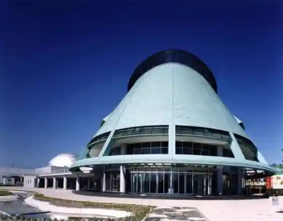
Kanagase Yakushi-do
Historic Yakushi hall in Kanagase
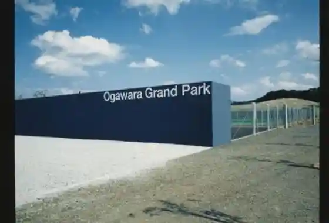
Blueberry Farm
Seasonal blueberry picking in Ogawara
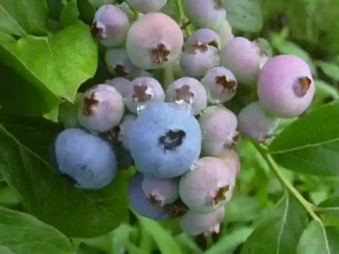
Ezuko Hall
Town cultural hall and event venue
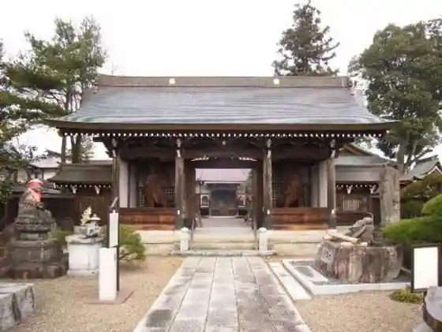
Ogawara Park
Central park popular in cherry-blossom season
Shiroishi River Swan Site
Winter swan stop along the Shiroishi River
Ame-gashi Candy Craft
Traditional candy craft experience stop